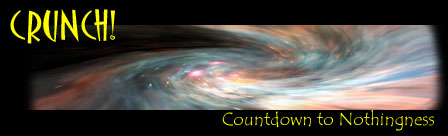
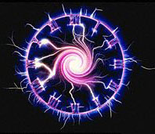
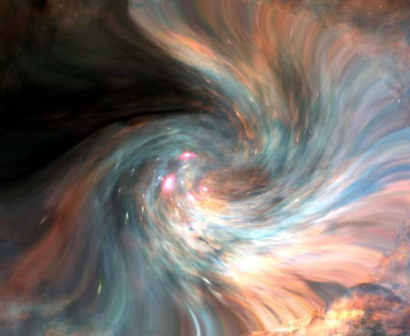

Picture
this: inside a cup of hot tea, a ghostlike shadow slowly takes shape, and then
-- pop, out of nowhere there's a lump of sugar. It's only one of many oddities
to be discovered when time starts running backwards. Weirder still, physicists
agree that one day in the future, this might really happen, when the Universe
displays the freakish burp of nature known as the Big Crunch.
What
goes up must come down. With that thought in mind, the entire Universe might
one day decide to shrink. And shrink, and shrink, and shrink. Until there's
nothing left.
The
Universe began some ten billion years ago, with the Big Bang. Out of nothing,
a bulb of tremendous energy set free. Matter didn't exist. The only thing
there was, was intense heat, and particles.
Outside
the bulb was nothing. No time, no space -- as a matter of fact, not even a
place where the word `nothing' would have any meaning. To ask what was
`before' the Big Bang or what is `outside' the Universe is a meaningless
question. It would be like asking what continent is south of the South Pole,
or what Bill Gates did before he was born.
But
the Universe expanded, at immense speed. It began to cool down, and matter
slowly started to take shape. After 100,000 years, the first atoms formed.
After 1,000,000 years, the first star flickered up. After 3,000 million years,
a small star that later would be called `Sun' was born. And another 5,000
million years later, an astrophysicist named Edwin Hubble would prove there
was such a thing as a `Big Bang' in the first place.
Well,
the Universe is still expanding, and cooling down. Time ticks. At least,
that's what we experience from our point of view.
Time
as we experience it is governed by entropy: the natural tendency of
things to go into a more chaotic, less energetic state. That sounds more
difficult than it really is. When you throw a coffee mug on the floor, it will
break up into a chaotic configuration of splinters, while throwing a handful
of splinters on the floor will not create a new a mug. When you put a lump of
sugar into your tea, the sugar molecules want to mingle with the tea
molecules, creating chaos. The only way to beat entropy is to invest energy --
for example; by gluing the splinters of the broken mug together one by one.
But
in the end, entropy always wins. Mountains erode, the Universe cools, the
Sun cools and will one day die, the Earth will eventually vanish, and all
coffee mugs will some day be broken. Entropy is deepest, most profound driving
force of the Universe. It defines time, ordering it to point towards what we
call `the future'.
But
then, out of the blue, something completely crazy happens. Suddenly,
the Universe stops expanding. And it actually starts shrinking again,
like a balloon losing air.
Some
cosmologists assume this will indeed be the case. There may be too much mass
in the Universe for the expansion to go on forever. The gravity of all matter
in the Universe combined may cause the inflation of the Universe to slow down,
come to a halt -- and after that, the Universe would start shrinking again.
This
would have unimaginable consequences. In a Universe that's contracting,
everything goes reverse. The arrow of time points backwards. Amazingly,
entropy would go the other way around.
So
there it is, the reverse-Universe.
There are lumps of sugar coming out of nowhere and pieces of pottery coming
together to form a coffee mug. Light will be mysteriously attracted to the
Sun, and sucked into it. Atoms will want to form molecules as difficult as
possible. Out of dust, mountains will form. Rivers will flow backwards. And
you'll have to add cold to keep your cup of tea from becoming so hot it
vaporizes and flies off.
But
you won't. As a matter of fact, you won't do anything -- since you're
probably not there anymore. Although some theorists believe that in a
reverse-Universe,
the dead would rise again, living reversed lives until they vanish into
nothing, it is unlikely this will happen.
For one thing, our bodies simply may not be apt to contracting universes. The biological mechanisms in our bodies are run by entropy. We need entropy like we need oxygen. No entropy, no life.
What's more, it will take a long, long time before shrinking day comes -- some estimates lead up to ten or twenty trillion years from now: 20,000,000,000,000,000 years. By that time, our Universe will have changed completely. Entropy will have caused stars to fade out and black holes to vaporize. Matter will be divided evenly across the Universe. It will have no particular reason to form stars and planets or humans living backwards lives. Matter will just clot together, making a denser and denser Universe.Admittedly,
it's all speculative business. But don't bother, you won't miss a thing if
you're not there when the Universe contracts. After some ten to twenty
trillion years of rewinding, the Universe would eventually go zip, as if it
never existed. It's the event known as the Big Crunch -- `crunch' in the mind
of scientists apparently being the opposite of `bang'.
But
will the Universe really vanish? At the moment, most cosmologists don't
think so. The latest evidence suggests that the Universe will keep expanding
forever, becoming an ever emptier and colder place. Yes, that gives some
problems of it's own -- but that's another
story. However, the question whether the Universe will shrink or expand
forever is still not completely settled.
But
then again, many theorists think that the Big Crunch won't be the ultimate
end. As the Universe is shrunk back into a ridiculously tiny proportion known
as the `Planck length', it would go Bang again. The Universe would expand once
more, and everything would start all over again, ping-ponging us forwards and
backwards in time forever.
Oh,
boy. Starting to feel dizzy already?
 |
 |